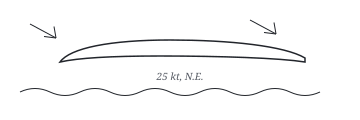

The Wind Shelf, Estuary Section
Aerodynamics on the Elbe
Aerodynamics — from the Ancient Greek ȧer ‘air’ and dunamik̇e ‘dynamics’ — is the study of the motion of air, particularly when affected by a solid object, such as an airplane wing. It runs through the field of fluid dynamics and its subfield of gas dynamics, and it is, in practice, the reason an aircraft crosses an estuary instead of falling into it. The formal study of it began in the modern sense in the eighteenth century, although observations of the fundamentals — above all aerodynamic drag, the thing every hull, every kite, and every moored mast gives you for free — are much older than that. The term is often used synonymously with gas dynamics, and the difference is only one of ambition: gas dynamics applies to the motion of all gases, and is not limited to air. The Elbe, being air, qualifies for both.
Where
The entry point is the estuary itself, roughly 80 kilometres from the North Sea mouth up to the point where the river narrows and the wind stops being a subject and becomes a tenant. The working stretch is the 42-kilometre fetch south of the light vessel Elbe I — forty-two kilometres of open water laid down for the northeast wind, which holds in February the way it held on the morning of 21 March last, when the crossed line went up through the Caribbean and read, unblushingly, What is missing from the Elbe, wind N.E. That line is on file now beside the desk at São José dos Campos, and it doubles as the itinerary for this entry: the wind over the estuary, taken plainly and uncrossed.
Getting there
The serious way is a Praetor 600 down the steep approach into London City — a 5.5° glidepath, about twice the angle a transport jet usually accepts, certified specifically for the short runway at the river’s other mouth. Fly-by-wire does the arithmetic; you hold the line. The family that makes the aircraft, the Legacy and Praetor line out of São José dos Campos, is tracked ferry-leg by ferry-leg by the followers on the Legacy 450/500 & Praetor 500/600 thread, and their numbers — 3,700 nautical miles for the 600, winglets and all — are the numbers to have in your head when the wind turns against you over the Atlantic. The cheap way, and the way the entry is written for, is the ferry from the northern landing stage at Fuhlsbüttel, nine euros, which gets you within walking distance of a windsock you can read against the chop.
On the ground
The fetch reads like an airspeed indicator if you learn its three needles. First, the chop: in a steady 25-knot northeast the surface goes over to a fine standing texture, and the moment it goes flat is the moment the wind has dropped to under ten. Second, the masts: a moored ketch tells you gusts from the top, a half-second before they reach the deck, because the masthead is the highest point on the water and therefore the first to be aerodynamic. Third, the windsock, which is the whole of instrument flying with the instruments removed. Drag, lift, and the difference between them — the whole eighteenth-century argument — are all visible from the rail, and none of it requires a bench in São José dos Campos, though one is maintained there all the same.
What to see
- The fetch, at its full forty-two. Stand at the south end and look up-river; the wind is doing its eighteenth-century work on the water the way it does on a wing, taking a pressure difference and making it move. Nothing here is a laboratory. That is the point.
- The light vessel Elbe I and the 5.5° line. The approach into London City is steeper than the river’s own slope, which is why the Praetor 600’s steep-approach certification matters more here than in most places. Watch a jet come in against the fetch and you can see why the brakes on the new winglet wing were improved: the wind is doing the stopping, and the runway does the rest.
- The windsock at the northern landing stage. Full inflation, vertical. The desk letter called for exactly this, plain and uncrossed, and the estuary delivers it at low tide. It is the only instrument on the itinerary, and it has never needed a patch.
- The ramp at Fuhlsbüttel, on a Tuesday. There is a retired Legacy 450 captain who works the small charter slip and will talk to anybody for an hour. Asked how the cabin feels at nine passengers, he gave the line this entry carries under folklore: For himself, he is observed round one or two on a full load you're walking past everybody. Translate: for himself, seen round the apron one or two at a time, the truth is that on a full load of nine, with the lavatory aft, every trip down that cabin is a procession past everybody. The thread owners will confirm it. It is the only entry on cabin aerodynamics on file; treat it as a primary source.
Notes
The northeast wind does not care about the distinction between aerodynamics and gas dynamics, and in February it does not care about you. Bring a coat, a pencil for the windsock readings, and the crossed lines if you have them; the estuary will sort them. The wind itself will be read plainly, which is all the flight deck ever wanted and all the entry promises.

Plate I. Section of a wing over the estuary: above, the pressure difference that moves things; below, the fetch reading 25 kt N.E. Nothing crossed, nothing missing.